A folio from the bookshelf
The genealogy of the rooms
How each room was made from the ones before it, read from left to right: a plain page and two ways of laying it out, eleven styles on the one with tabs, the styles crossed with one another, and the workspace they became. A full line runs to a room from one it builds on; a dashed line from one it took a single part from. Point at a print to read its label and light its line.
The lineage
I The working core Nos. 1 to 3
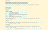
No. 01 The working coreThe first room. The interpreter and the sieve solver made to work, in black text on white with the least styling.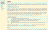
No. 02 Sub-pagesFrom No. 01. The one long scroll split into sub-pages for the instructions, the editor, the card viewer and the output.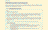
No. 03 TabsFrom No. 01. The same four parts behind tabs: the layout every themed version starts from.
II Eleven styles Nos. 4 to 14
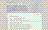
No. 04 Thermal paper and typewriterFrom No. 03. Printouts on thermal paper and typewritten documents: monochrome, serif, yellowed, with scanner dust.- No. 05 MicroficheFrom No. 03. High contrast, monochromatic, grainy and ragged, as a frame of microfiche on a reader.
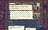
No. 06 ScrapbookFrom No. 03. An eclectic scrapbook of collected paper artifacts, and the first of the miscellanea.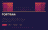
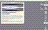
No. 08 Ordered ditheringFrom No. 03. Vintage computer graphics: ordered dithering with at most eight steps to a channel.- No. 09 Swiss style in hatchingFrom No. 03. The Swiss and International styles, with hatching in place of colour.
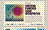
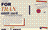
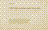
No. 12 The BackroomsFrom No. 03. The look and feel of the Backrooms: the page as a liminal space, an echo of the past.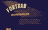
- No. 14 Reflection in a Dead DiamondFrom No. 03. The cinematography and set design of Cattet and Forzani’s film: bold, slightly odd 1960s design.
III Crossings Nos. 15 to 18
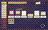
No. 15 A physical workspaceFrom No. 04 and No. 06. A skeuomorph of a desk, its materials in books, notebooks and decks, with music decks and a reel-to-reel player.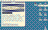
No. 16 A digital workspaceFrom No. 08, with a part of No. 15. A vintage computer desktop with a buffer editor and a player program, and v15’s miscellanea as documents.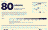
No. 17 A game of punch cardsFrom No. 09. v9’s style for a puzzle game that teaches how to write and use punch cards.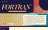
No. 18 Code art in halftoneFrom No. 10 and No. 14, with a part of No. 11 and No. 12. v14’s graphics through v10’s halftone, and the experimental decks of v11 and v12, framed by code art.
IV The workspace Nos. 19 to 25
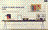
No. 19 The workspace with a magazineFrom No. 15 and No. 18. v15’s desk tightened, with v18 as a magazine on it whose decks can be run.- No. 20 Puzzles on the desktopFrom No. 16 and No. 17. v17’s puzzles inside v16’s desktop, its graphics refined in v17’s design language.
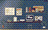
No. 21 A desk with a computerFrom No. 19 and No. 20. One workspace: v19’s desk with a computer on it that runs v20’s desktop, each half in its own style.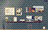
No. 22 VectorFrom No. 21. v21 in one style: the computer redrawn as a modern vector interface, and things in the room that can be changed.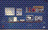
No. 23 Pixel artFrom No. 21. v21 in one style: the room as pixel art, the computer in full-colour pixels.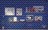
No. 24 Pixel art with variationsFrom No. 23 and No. 22. v23’s pixel room with v22’s variations, lit for every lamp and every time of day.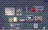
No. 25 The room, perfected and expandedFrom No. 24. v24 perfected and expanded into a space to wander: a reading corner round the corner, machines under the desk, and nooks to get lost in.